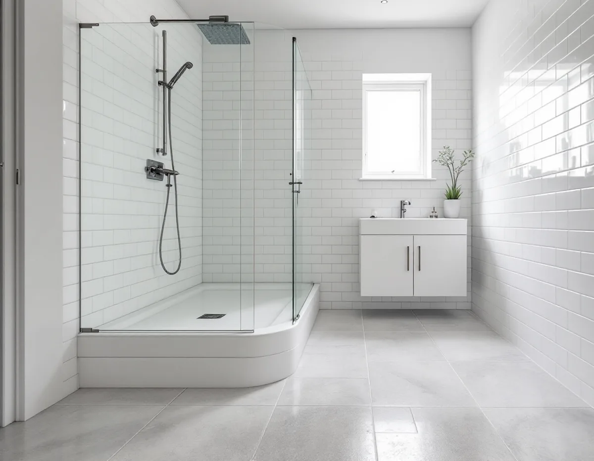
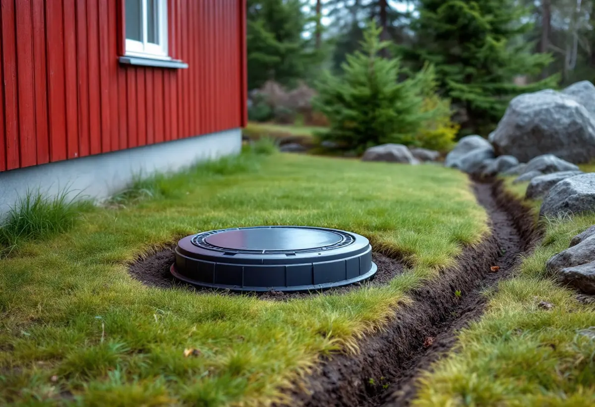

Besök och avloppsfrågan
Vi ser rummet och tar reda på om huset har självfall, LTA eller egen anläggning.
I Tyresö avgörs ett nytt badrum ofta av det som händer utanför huset: en pumpstation för lätt trycksatt avlopp på tomten, en källare där vatten kan tränga upp genom golvbrunnen eller en egen avloppsanläggning som ska ta emot mer vatten. Geal Entreprenad AB river, bygger tätskikt och samordnar VVS och el, och vi går igenom hur avloppet fungerar innan rummet ritas.

På Tyresö kommuns sida om LTA, lätt trycksatt avlopp, förklaras skillnaden mot ett vanligt system. I ett konventionellt system rinner avloppsvattnet med självfall till huvudledningen. Med LTA behövs en pumpenhet på fastigheten som pumpar bort det. Fastighetsägaren ordnar och bekostar allt arbete på tomten fram till förbindelsepunkten, medan kommunens del är ledningen i gatan.
Att installera stationen och dra rör på tomten är enligt kommunen anmälningspliktigt. I ansökan om startbesked ska det framgå var stationen ska stå och hur rören dras mellan byggnaden, stationen och förbindelsepunkten. Installationen ska fotodokumenteras i öppet schakt, och stationen behöver en elförsörjning som är installerad av en elektriker. Ordningen är bestämd: startbesked, beställning och installation, skriftligt besked om att förbindelsepunkten är upprättad, anläggningsavgift och sist driftsättning.
För badrummet betyder det att rördragningen från huset ritas in redan i anmälan. Ska badrummet flyttas, få en ny golvbrunn eller kompletteras med ett andra våtrum är det därför klokt att bestämma det innan anmälan skickas, i stället för att koppla den nya stationen till gamla rör och ändra senare.

Saknar fastigheten kommunalt avlopp krävs tillstånd för att inrätta ett enskilt avlopp. På sidan om enskilt vatten och avlopp skriver kommunen också att du ska anmäla om du ändrar en anläggning så att avloppsvattnets mängd eller sammansättning ändras väsentligt. Ett nytt badrum med dusch och toalett i ett hus som tidigare hade ett enkelt våtrum kan vara en sådan ändring, och det är kommunen som gör bedömningen.
Slamavskiljare och slutna tankar ska tömmas av kommunens entreprenör, och det är inte tillåtet att anlita någon annan för tömningen. Ansluts huset senare till det kommunala nätet ska den gamla anläggningen tas ur bruk, och slamtjänsten sägs upp separat eftersom det inte sker automatiskt.
Har huset egen brunn påminner kommunen om att hålla koll på vattennivå och vattenkvalitet och använda vattnet hållbart, så att risken för saltvatteninträngning minskar. Inför ett nytt avlopp kan du boka den kostnadsfria VA-rådgivning som Tyresö delar med Haninge och Nynäshamn.
Kommunens sida om översvämningsrisker beskriver hur vatten kan tränga upp genom golvbrunn och spygatter när dagvattensystemet inte hinner leda bort allt vatten vid kraftigt regn. Vid stopp i avloppet kan vatten komma in i källaren även i torrt väder, och risken för stopp är störst i fastighetens egen ledning. Trädrötter i rörskarvar och ledningar som skadats av sättningar är två av orsakerna som kommunen nämner.
Ett enkelt test finns på samma sida. Lyft på locket till rensbrunnen vid förbindelsepunkten: står det vatten i den sitter stoppet i kommunens ledning, är den tom sitter det i fastighetens. Kommunen skriver också att den inte betalar ersättning för översvämningsskador om avloppet i gatan byggts om till ett tvådelat system och fastigheten trots uppmaning inte separerat sitt eget avlopp.
Fastighetens VA-system ska enligt kommunen vara väl underhållet, inte minst anordningarna som skyddar mot inträngande avloppsvatten, och alla förändringar av fastighetens VA-system ska godkännas av tekniska kontoret. Ett nytt källarbadrum är alltså en fråga för kommunen redan på ritningsstadiet. Marken runt huset ska luta bort från fasaden, minst 15 centimeter på de första tre metrarna enligt kommunens tumregel. Stuprör och rännor hör till samma sak, se takläggare i Tyresö.
Det kommunala dricksvattnet i Tyresö kommer från Mälaren och distribueras av Stockholm Vatten. På sidan om kranvatten anger kommunen en hårdhet på 4–5 dH, vilket räknas som mjukt, och skriver att disk- och tvättmaskin därför inte behöver något avhärdningsmedel. Har huset egen brunn kan vattnet vara ett helt annat, och då är ett vattenprov ett bra underlag innan nya blandare väljs.
Läckande installationer är en annan orsak till vattenskador som kommunen tar upp. Råden är att byta äldre vatteninstallationer som är i dåligt skick, att stänga huvudventilerna vid vattenmätaren om du är borta en längre tid och att sätta avstängningsventiler på till exempel tvättmaskinen. I ett nytt badrum planerar vi in avstängningar som går att nå utan att något behöver rivas.
Ska köket kopplas om samtidigt finns mer under köksrenovering i Tyresö, och om snickeriet i en stuga som byggs om under snickare i Tyresö.
Vi ser rummet och tar reda på om huset har självfall, LTA eller egen anläggning.
Rensbrunn, golvbrunn och ledningar bedöms, liksom risken för inträngande vatten.
Ändras VA-installationen tar vi fram ritningar och underlag för anmälan.
Rivning, tätskikt, VVS, el och ytskikt står som egna poster.
Fall mot ny golvbrunn, våtrumsskivor och tätskikt; installatörerna drar rör och el.
Kakel, klinker och porslin monteras, och vi visar var avstängningarna sitter.
Avdraget är 30 procent av arbetskostnaden, högst 50 000 kr per person och år och högst 75 000 kr tillsammans med rutavdrag. För ett småhus räknar Skatteverket bland annat kakel- och klinkersättning, att dra in och reparera vatten- och avloppsledningar och att installera vattenmätarkonsol och vattenfelsbrytare som rotarbete.
Att filma avloppsrören ger däremot inget avdrag, inte ens i samband med annat rotarbete, och inte heller slamsugning och tömning av septiktankar. Geal drar avdraget direkt på fakturan.
Om avloppet går med självfall, via en LTA-station eller till en egen anläggning, om badrummet ligger i källaren, om golvbrunn och ledningar behöver bytas och vilka ytskikt du väljer. Platsbesöket är gratis, och du får ett skriftligt kostnadsförslag innan något beställs.
Tätskikt, golvbrunn, el, VVS och intyg.
Badrumsrenovering i Stockholm →Takbyte, takbesiktning och plåtarbeten.
Takläggare i Tyresö →Solberga, Raksta och Brevik.
Takrenovering i Tyresö →Startbesked, utstakning och slutbesked.
Byggföretag i Tyresö →Timmerhus, fritidshus och villor i Tyresö.
Fasadrenovering i Tyresö →Gamla bågar och beslag i Tyresö.
Fönsterbyte i Tyresö →Fritidshus som byggts om till villor.
Golvläggare i Tyresö →Slipa och spara gamla brädgolv.
Golvslipning i Tyresö →Stugor som blir helårshus.
Köksrenovering i Tyresö →Rödfärgade hus, stugor och interiörer i Tyresö.
Målare i Tyresö →Stuprör, rännor och beslag i Tyresö.
Plåtslagare i Tyresö →Stugor, altaner och tillbyggnader.
Snickare i Tyresö →Ny tapet i rum med eldstad.
Tapetsering i Tyresö →Byggrätten i omvandlingsområdena.
Tillbyggnad i Tyresö →